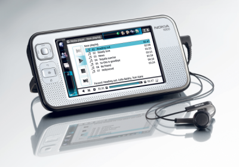

...making Linux just a little more fun!
J. Bakshi [j.bakshi at unlimitedmail.org]
Hello list,
I have configured a samba server which is a standalone file and printer sharing samba. I have no problem to use it from Linux. but strange problem from WinXP box. First of all the XP machine wait long to reach the share and though a mapdrive is possible to create for the share; it is immediately Disconnected after a reboot of the XP. More over a connected mapdrive lost its share path after approx 2 hrs. I am really very confused to see these strange problem in XP box.
Here is my config file I am using for samba ( collected from an online doc )
##################### [global] local master = no admin users = adminsam unix password sync = yes force create mode =0774 utmp = no smb ports = 139 domain logons = no domain master = yes os level = 55 passwd program = /usr/sbin/userpasswd %u passwd chat = password: %n\n password: %n\n successfully. netbios name = ClarkConnect workgroup = Enterprise server string = ClarkConnect bind interfaces only = yes interfaces = lo eth0 eth1 use client driver = yes printcap name = /etc/printcap load printers = yes security = user encrypt passwords = yes smb passwd file = /etc/samba/smbpasswd force create mode =0777 force directory mode =0777 force user = apache deadtime = 10 #### modification, changing 2 to 1 to minimise log writing ### debug level = 1 syslog = false socket options = TCP_NODELAY SO_RCVBUF=8192 SO_SNDBUF=8192 dns proxy = no utmp = yes #keep alive = 10 #deadtime = 5 max xmit = 4096 oplocks = yes read raw = yes write raw = yes getwd cache = yes # WINS / VPN # ---------- wins support = yes wins server = # Authconfig adds these #---------------------- idmap uid = 16777216-33554431 idmap gid = 16777216-33554431 template shell = /bin/false winbind use default domain = no # PDC #---- add machine script = /usr/sbin/useradd -d /dev/null -g samba-clients -s /bin/false -M %u #======== Share Definitions ===== [printers] #printing = cups path = /tmp browseable = yes printable = yes public = yes guest ok = yes [shared] comment = Public Shared Folder path = /home/shared browseable = yes guest only = yes writable = yes public = yes #### for www folder with RW access ######## [WWW] comment = WWW path = /var/www/html browseable = yes guest only = no writable = yes public = no force create mode =0777 force directory mode =0777 force user = apache deadtime = 10 ####### end #######
Here is some test. the samba server IP is 192.168.1.41
[ ... ]
[ Thread continues here (1 message/4.40kB) ]
J. Bakshi [j.bakshi at unlimitedmail.org]
Hello,
Is there anyone using icewm+idesk combination ? I have seen that wallpaper support is already there in idesk; more over changing the wall paper from a source folder is also possible. But is it all theory ? I can't get the wallpaper working in box. I am using idesk 0.7.5-4.
Any success from anyone ?
Please CC to me
[ Thread continues here (10 messages/12.22kB) ]
Jimmy O'Regan [joregan at gmail.com]
I wrote back in March, excited that Apertium had been chosen as one of
the organisations in this year's GSoC
(http://linuxgazette.net/161/lg_mail.html 
It's been an interesting experience. We're at the midterm evaluations now, and 8 of our 9 students look like they'll pass - I know I gave my student a glowing review, which is no less than he deserves. The student who looks like likely to fail leaves a bit of a bad taste in our mouths, because he not only was a member of our community beforehand, but a few of us specifically talked him into it, and heck, we got drunk with him at a workshop in Dublin. Barring the (frankly, unlikely) scenario that he has actually been busily working away in some remote location without 'net access, I hope he'll do the honourable thing and bow out gracefully - I don't think any of us particularly like being in the position of having to choose between either feeling like we've betrayed this guy in some way or that we've helped him to steal money from Google.
But, all in all, it's been an interesting experience so far, and one that I'd recommend to anyone.
(Oh, and it might interest Rick a little to know that we have two
'Viking' projects - Nynorsk-Bokmål and Swedish-Danish
J. Bakshi [j.bakshi at unlimitedmail.org]
Dear list,
I have become confused about the domain name handling in debian. I have a suse box too. It is very easy to set the domain name in suse box " domainname <example.com> ". Similarly to set FQDN in suse " hostname <hostname>.<example.com>"
How to achieve this in debian ? No domainname command is there in debian (lenny). There are /etc/hosts and /etc/hostname but where can I save domain name ? and where to save FQDN ? I am really confused here. Please enlighten me. Thanks.
PS: Kindly CC me
[ Thread continues here (5 messages/6.25kB) ]
J. Bakshi [j.bakshi at unlimitedmail.org]
Hello list,
I have upgraded my box to debian squeeze. And discover ffmpeg stops converting to .mp3 . I have libmp3lame installed ; more over it was running well before up-gradation. After doing some google serach I have found that libmp3lame support has been disabled in official debian package. Then I have found multimedia.debia.org repo where the ffmpeg is distributed with less strict license policy. but again vlc now broken after adding that repo in my sources.lst and updating due to library collision.
Is there any repo which provides the ffmpeg with mp3 support and still maintain the official debian naming scheme ? then I can use both vlc as well as ffmpeg.
Thanks
Kindly cc to me
[ Thread continues here (3 messages/3.31kB) ]
Ben Okopnik [ben at linuxgazette.net]
This is a part of an interesting series at the Good/blog about the (X) value of sharing, with X being political, financial, artistic, etc. - by people who know those fields. E.g.:
http://www.good.is/post/chris-dibona-on-the-computational-value-of-sharing/
-- * Ben Okopnik * Editor-in-Chief, Linux Gazette * http://LinuxGazette.NET *
terry tung [home2001inc at hotmail.com]
Dear Mr. James T. Dennis,
I read of your article on the web "The Answer Guy" and I think you can help me with my application.
I need help to write a program to sort out of some of my e-mail and auto response to buttons " accept" or "decline". I am not a dot generation and it will require too much efforts to start from the beginning. I am asking some one will write the application for me for a fee(appreciation). Can you help? Or, can you assign someone else to help? I use the regular hotmail in the window environment.
Regards,
Terry Tung
[ Thread continues here (5 messages/5.25kB) ]
Peter Clark [clarkp at mtmary.edu]
René Pfeiffer wrote:
>>> These attributes are used by the quota management system, which I didn't >>> describe in the article. It is basically a web-based GUI where >>> administrators can change these values. Some scripts read the quota >>> values from the LDAP directory and write it to the Cyrus server by using >>> the Cyrus Perl API. mailSizeMax isn't used in the setup, but again it >>> was supposed to be. >> Is the management system based off your "cyrus_syncboxes.pl"? Could you >> describe the system you used? > > The management system consists of a couple of Perl scripts. > cyrus_syncboxes.pl only synchronises the mail quota settings from the > LDAP tree with the settings on the Cyrus server. The other scripts are > CGIs and part of a web management UI. Admins can create, delete and > modify accounts. A rough overview over the functionality can be found > here: > http://web.luchs.at/information/docs/mailadmin_prozesse.pdf > > I am trying to publish the scripts as soon as I got the time to review > the code and remove everything specific to the servers they manage. > >Rene,
Did you ever get around to publishing the scripts mentioned above?
What web management UI are you using? Was it something like phpldapadmin or some custom job?
What webmail system are you using with this setup?
Cheers, Peter.
[ Thread continues here (3 messages/8.39kB) ]
Amit Saha [amitsaha.in at gmail.com]
Hi!
I use PPP to use a GPRS and/or CDMA modem. The 'pppd' often dies abruptly, blurting out "modem has hung up".
I am not suspecting a network issue as it doesn't happen on Windows. Any idea how can I find out the reason and may be then correct it ?
Thanks!
-Amit
-- Journal: http://amitksaha.wordpress.com, Micro-blog: http://twitter.com/amitsaha Freenode: cornucopic in #scheme, #lisp, #math,#linux, #python
[ Thread continues here (14 messages/20.95kB) ]
[ In reference to "Writing Network Device Drivers for Linux" in LG#156 ]
Mr, Vikas (NSN - IN/Bangalore) [vikas.mr at nsn.com]
Hi,
I read this article and it was very helpful. Do you have similar articles for Broadcom Corporation NetXtreme II BCM5708 Gigabit Ethernet (rev 12) ?
Regards
Vikas
[ In reference to "2-Cent Tips" in LG#164 ]
Paul Sephton [paul at inet.co.za]
@$# This was originally entitled: "about 2c ext2 fragmentation" - Kat $#@
On Fri, 2009-07-03 at 22:46 +0200, Carlos Baiget wrote:
> another 0.5c: If any file in the given directory has a space in his > name, the defragmentation script will not work. To replace all spaces > inside the file name, i suggest to do a > > rename 's/\ /_/g' * > > previously or modify IFS environment variable to not consider space as > field separator. > > Carlos
Ah, yes; or simply quote the file names as follows:
fs=`echo "$line" | cut -f 1 -d':'`
fn=`echo "$line" | cut -f 2 -d':'`
# copy the file up to 10 times, preserving permissions
j=0;
while [ -f "$fn" -a $j -lt 10 ]; do
....
IFS also makes sense. Thanks for highlighting this rather serious error. I really should have taken the trouble to test this properly first!
Paul
[ Thread continues here (10 messages/14.83kB) ]
[ In reference to "2-Cent Tips" in LG#164 ]
Dan Moore [danmoore63043 at yahoo.com]
Re: Laptop installation problem from jack [rjmayfield at satx.rr.com] in issue #164.
Whenever I have trouble booting a distro, I disable "quiet" and "splash" options, so I can see text indicating a problem, or at least telling me how far the boot got.
On our Dell C400, I boot by adding the boot options: noapic nolapic acpi=off vga=771
I've never met a distro that can't boot the C400 with those added.
- Dan
P.S. If I sent to the wrong list, please enlighten me.
Mulyadi Santosa [mulyadi.santosa at gmail.com]
For those who needs quick help on number conversion between base-x to base-y, bc can lend a help here. For example, what's the hexadecimal form of 116?:
$ echo 'obase=16; 116' | bc 74
And what does binary 11010101 look in decimal?
$ echo 'ibase=2; 11010101' | bc 213
By doing below step, you directly convert binary 11010101 to hexadecimal:
$ echo 'obase=16; ibase=2; 11010101' | bc D5
Note that "obase" must preced "ibase" in order to make a correct final result.
regards,
-- Mulyadi Santosa Freelance Linux trainer blog: the-hydra.blogspot.com
[ Thread continues here (6 messages/6.90kB) ]
By Deividson Luiz Okopnik and Howard Dyckoff

|
Contents: |
Please submit your News Bytes items in plain text; other formats may be rejected without reading. [You have been warned!] A one- or two-paragraph summary plus a URL has a much higher chance of being published than an entire press release. Submit items to bytes@linuxgazette.net.
 SUN Approves Oracle Merger, Cancels "Rock"
SUN Approves Oracle Merger, Cancels "Rock"At a special meeting on July 16, 2009, Sun Microsystems stockholders adopted the merger agreement with Oracle Corporation, under which Oracle will acquire Sun common stock for $9.50 per share (or $7.4 billion). Approximately 62% of Sun shares outstanding voted for the deal.
The transaction remains subject to regulatory approvals and other closing conditions. For more informawtion regarding the proposed transaction, please visit http://www.sun.com/third-party/global/oracle/.
Recently, Sun has been reported as cancelling its multi-billion dollar "Rock" program, which was based on a new third-generation SPARC architecture for high-end systems. Sun had said the next SPARC processor was part of its plan to compete with PowerPC and x86 chips.
Rock was designed with 16 cores, each of which had two software threads. Rock used hardware-based dynamic parallelization of the instruction stream, and would have been the first processor to use transactional memory in hardware.
NY Times Releases Thesaurus to Linked Data Cloud, FOSS Data ConverterAt a keynote presentation at the 2009 Semantic Technology Conference, in San Jose, California, staff from the New York Times made a significant announcement regarding use of the NYT Annotated Corpus and the NYT Index in the "Linked Data Cloud".
For nearly 100 years, the staff at the New York Times have maintained a thesaurus for use with its content. The thesaurus consists of more than a million terms organized into five controlled vocabularies: subjects, personal names, organizations, geographic locations, and the titles of creative works (books, movies, plays, etc).
At the June Semantic Technology Conference, Rob Larson and Evan Sandhaus announced their intention to publish the New York Times thesaurus under a license that will allow the community to both use it and contribute back to it. The results will, in time, prepare the New York Times to enter the global linked data cloud, by releasing its thesaurus in linked data format.
Releasing the Times thesaurus is consistent with their developing TimesOpen strategy. In a blog entry at the Times's "Open" site, Larson and Sandhaus wrote, "We want to facilitate access to slices of our data for those who want to include Times content in their applications. Our TimesTags API already makes available our most frequently used tags, the 27,000 that power our topics pages. But the new effort will go well beyond that. We plan to release hundreds of thousands of tags from the corpus back to 1980, and, later, in a second phase, hundreds of thousands more, going back to 1851."
Their plan is that user and Semantic Technology communities will begin to link the NY Times thesaurus to new and existing taxonomies, and eventually help standardize the use of those terms on the World Wide Web.
The specific license details remain to be worked out, but will be based on one or more existing open source licenses.
Also, in June, the NY Times released a PHP framework called NYT_Transformer. This is a flexible open source data converter that can be customized for various input and output types.
NYT_Transformer accepts records from an input source, passes them through filters, and sends them to an output object. It can also perform further data manipulation, such as changing the data in the resulting records or discarding records based on criteria specified. It was originally developed to convert XML data for storage in a MySQL database. NYT_Transformer uses the Apache 2.0 license.
Find more info on NYT_Transformer at http://code.nytimes.com/projects/nyt_transform.
Join us at the 18th USENIX Security Symposium, August 10–14, 2009, in Montreal, Canada.
USENIX Security '09 will help you stay ahead of the game by offering innovative research in a 5-day program that includes in-depth tutorials by experts such as Patrick McDaniel, Frank Adelstein, and Phil Cox; a comprehensive technical program, including a keynote address by Rich Cannings and David Bort of the Google Android Project; invited talks, including the "Top Ten Web Hacking Techniques of 2008: 'What's possible, not probable,' " by Jeremiah Grossman, WhiteHat Security; a refereed papers track, including 26 papers presenting the best new research; Work-in-Progress reports; and a Poster session. Learn the latest in security research, including memory safety, RFID, network security, attacks on privacy, and more.

http://www.usenix.org/sec09/lga Register by July 20 and save! Additional discounts available! http://www.usenix.org/sec09/lga
RHEL 5.4 Beta Now AvailableEarly in July, Red Hat released the Red Hat Enterprise Linux 5.4 beta (kernel-2.6.18-155.el5), with versions for x86, x86/64, Itanium, IBM POWER, and System z. This RHEL beta release includes a variety of new features and capabilities, combined with enhancements in virtualization, storage/filesystems, security, and developer tools.
The most exciting new capability in the RHEL 5.4 beta is the incorporation of KVM-based virtualization, in addition to existing Xen-based virtualization. RHEL 5.4 provides the first commercial-strength implementation of KVM, which is developed as part of the upstream Linux kernel. Xen-based virtualization, of course, remains fully supported for the life of the RHEL 5 family. Red Hat also announced the availability of the beta release of the Red Hat Enterprise Virtualization portfolio, which includes Red Hat Enterprise Virtualization Manager for Servers, Red Hat Enterprise Virtualization Manager for Desktops, and the standalone, KVM-based Red Hat Enterprise Virtualization Hypervisor.
An important feature of any RHEL update is that kernel and user APIs are unchanged, so that RHEL 5 applications do not need to be rebuilt or re-certified. This situation extends to virtualized environments: with a fully integrated hypervisor, the application binary interface (ABI) consistency offered by RHEL means that applications certified to run on RHEL on physical machines are also certified when run in virtual machines. The portfolio of thousands of certified applications for RHEL applies to both environments.
Here are some additional highlights:
For full details on the new features in the RHEL 5.4 beta release, check the Release Notes, available at http://press.redhat.com/?s=itanium.
TopQuadrant Offers Free Semantic Web Modeling ToolTopQuadrant, a major player in Semantic Web application development technology, released TopBraid Composer Free Edition, a professional editing and querying tool for Semantic Web technology that allows users to view, share, and query RDF data. TopBraid Composer Free Edition is a starter version of TopBraid Composer, a leading commercial Semantic Web modeling tool.
Technical users can build enterprise-class semantic models, design and edit semantic queries, create semantic business rules, and share their creations with others for free. Users can also import RDFa markup used to publish machine-readable data on the Web. TopBraid Composer Free Edition simplifies the process of linking business logic to domain models by providing an object-oriented rule model.
"There is fast-growing interest from all industries to understand the unique data quality, data integration, and dynamic discovery benefits that Semantic Web technology has to offer," said Holger Knublauch, VP of product development at TopQuadrant. "But we recognize that unfamiliarity with W3C Semantic Web standards and cost are two obstacles prohibiting many organizations from starting a Semantic Web project. By offering a free version of our modeling environment, we are removing these barriers." Knublauch is a co-creator of Owl, and joined TopQuadrant a few years ago.
TopBraid Composer Free Edition shortens the learning curve for starting Semantic Web projects by using Eclipse, a popular open source development environment that is familiar to a broad set of developers. In addition to support for W3C standards such as RDF, OWL, and SPARQL, TopBraid Composer Free Edition also includes SPIN (SPARQL Inferencing Notation), the first Semantic Web language with an explicit object-oriented rule model that can link business logic and domain models. SPIN eliminates the need to learn OWL to link RDF resources with associated queries or to reuse queries.
TopBraid Composer Free Edition offers all of the functionality needed to view, share and query RDF data in an enterprise-class Semantic Web project. Users can:
NASA recently announced it is using TopBraid Suite 3.0 as a semantic application platform to model, organize, integrate, and exchange data within and across the multi-decade Constellation Program. NASA's use of TopBraid Suite is a significant commitment to using a semantic data architecture in the full "engineering-through-operations" lifecycle to achieve the Constellation Program's ambitious planetary exploration goals, which include manned travel to Mars.
More specifically, NASA will use TopBraid to develop and manage NExIOM - the NASA Exploration Initiatives Ontology models. NExIOM formalizes the way machines and people specify NASA Exploration systems, related work activities, and their interrelationships.
To download TopBraid Composer Free Edition go to: http://tinyurl.com/tbc-fe.
Keynote Releases New Monitoring ServicesAt the Velocity 2009 conference in June, Keynote announced Keynote Transaction Perspective 9.0, a much enhanced version of the company's Web site monitoring service, for "Next Web" applications.
Umang Gupta, CEO of Keynote, announced the new SaaS-like solution in front of 600 people at the O'Reilly event. A video of his short announcement and demo is available here: http://velocityconference.blip.tv/file/2280364.
Transaction Perspective 9.0 includes new support for interactive Flash and Silverlight, composite Web transactions, and 3rd party online ad tracking.
In April, Keynote Systems introduced LoadPro 2.0, which enhanced its load-testing tools in support of user metrics or Quality of Experience (QoE). Keynote has already established strengths in QoE-related testing with a strong "human face," including insights into business competitiveness globally, as well as domain and consulting expertise in how consumers interact with Internet services.
EMA (http://www.enterprisemanagement.com/), a leading market research analyst firm, wrote a very positive note on Keynote LoadPro 2.0. The new version includes a new end user portal, an expansive overview dashboard, precise visibility into real time tests as they execute, and comprehensive enterprise-level account management. The new functionality is built on top of a dedicated load testing network that can deliver up to one million concurrent test users across multiple Internet backbones.
Recent research from EMA in December, 2008, established that 79% of the 207 respondents view QoE as becoming more important to their business or organization. QoE demands a focus on the "human consumer" in all his or her complexities, rather than on more convenient, but far less relevant, component-centric technology metrics.
Sourcefire Releases Virtual Appliances for Physical and Virtual
EnvironmentsSourcefire, creator of Snort, announced Sourcefire 3D System 4.9, with the new Sourcefire Virtual 3D Sensor and Sourcefire Virtual Defense Center. These new virtual appliances enable users to deploy the company's security solutions within their virtual environments. Available during the second half of 2009, the Sourcefire 3D System 4.9 also features the industry's first policy layering capabilities that deliver increased customization for large or multi-organizational networks, including cloud or virtual implementations.
As part of the Sourcefire 3D System 4.9, the new virtual appliances allow organizations to inspect traffic between virtual machines, while also making it easier to deploy and manage sensors at remote sites, where resources may be limited. They also enable Managed Security Service Providers (MSSPs) and cloud computing companies to easily implement Sourcefire's leading security solutions for increased protection. MSSPs can configure multiple Virtual Defense Centers to support multiple customers from a single VMware server, increasing the efficiency of management efforts.
Users can deploy Virtual 3D Sensors on VMware ESX and ESXi platforms to inspect traffic between two or more virtual machines (VMs), while also using physical Sourcefire 3D Sensors to inspect traffic going into and out of a VMware virtual environment. Deployed as software running within VMs, the Virtual 3D Sensor also makes it easier for users to inspect traffic on remote segments of the network where local IT security resources may not exist (e.g., retail stores, remote offices) or where little rack space remains in the datacenter.
The Virtual 3D Sensor will provide simultaneous execution of Sourcefire IPS, RNA (Real-time Network Awareness) and RUA (Real-time User Awareness) functions. Customers can deploy the Virtual Defense Center to monitor any combination of up to 25 virtual or physical 3D Sensors. They can also opt to monitor their Virtual 3D Sensors from the same physical Defense Center they use to monitor their physical 3D Sensors.
Sourcefire 3D System v4.9 Will Be Available in
Second Half of 2009The new Version of VNC Enterprise provides cross-platform remote printing. In June, RealVNC launched the latest version of its enterprise VNC solution for remote desktop control. VNC Enterprise Edition 4.5 offers fully cross-platform remote printing, enabling users to print documents from the remote machine to the local default printer on the VNC Viewer. Other new features include enhanced cross-platform chat, support for international characters, and more robust performance.
Designed and built by the original inventors of VNC, VNC Enterprise Edition 4.5 has a wide range of applications - from desktop support and assistance in a business environment to delivering Linux and Unix applications to Windows or Mac users. Also, because it is designed specifically for the enterprise, it includes multiple configurable security mechanisms, and is backed up with full technical support and maintenance.
Cross-platform remote printing means that when a connection is made, documents printed by the remote computer running VNC Server will automatically default to the local printer attached to the computer running VNC Viewer.
VNC Enterprise Edition 4.5 also supports cross-platform chat, creating a quick and simple channel of communication between users, which can be initiated from either end. VNC Server can now notify users of incoming connections for added security.
VNC Enterprise Edition 4.5 includes tools for wide-scale distributed deployment, configuration, and management, and supports more operating systems than any other remote access software, including Windows NT 4, 2000, XP, Server 2003, Vista, Server 2008, and Windows 7, along with Mac OS X, Linux, Solaris, HP-UX, and AIX.
The cost of VNC Enterprise Edition 4.5 starts at $50 for a single VNC Server licence, with discounted volume pricing starting at three copies, quickly reducing the unit price. In addition, there are generous academic, governmental and non-profit discounts available on request.
HP Ships Workstation with Dual 6-core 'Istanbul' Opteron CPUsHP is now outfitting AMD's six-core "Istanbul" Opteron processor into its high-end HP xw9400 workstation, aimed at 3-D digital content creation, and science and engineering applications.
HP officials say the troubled economy is putting pressure on businesses to quickly get a return on their IT investments, which the new AMD Opteron chips enable due to new virtualization, performance, and efficiency enhancements. Each new Opteron chip has up to 34 percent more performance per watt over AMD's previous quad-core processors.
The HP xw9400 workstation can seat two of the chips, for a total of 12 cores.
HP also announced in June that of seven ProLiant G6 servers would be powered by new AMD six-core Opteron processors, which were officially released June 1.
Other Features Include:
AMD HyperTransport 3.0 technology (HT3) increases interconnect rates from 2 gigatransfers per second (GT/s) up to a maximum 4.8 GT/s, allowing the entire system to provide superior performance. Additionally, the HP xw9400 can be configured with the ATI FirePro V7750 3-D workstation graphics accelerator.
The HP xw9400 Workstation starts at a U.S. list price of $1,899, and is available at: http://www.hp.com/go/workstations.
Cisco Launches Linux WiFi Router with Media SharingIn June, Cisco announced a new Linux-powered router, a Linksys Wireless-N Router, model WRT160NL. The new model is essentially the next generation of the popular WRT54GL.
The design of the product is similar to other Linksys/Cisco N-routers, but has integrated connectors for external antennae. Consumers that prefer external aerials can enjoy the new router design because of the integrated R-SMA antenna connectors. The integrated Storage Link functionality lets consumers connect their USB storage device to the router to create a powerful media sharing solution for video, photo, and music sharing through the integrated media server.
"In the past we have had many successful Linux powered devices, with the WRT54GL and NSLU2 being great examples. The WRT160NL is the logical next step combining Linux, 802.11n technology, and USB storage functionality. We see the WRT160NL as a possible successor of our WRT54GL as the market transitions to 802.11n," said Aaron Marinari, senior product manager, Cisco Consumer Business Group.
Features:
The WRT160NL has a 400Mhz processor, 8 Megabytes of Flash memory, and 32 Megabytes of DDRAM. It will retail for $119.99.
For more infomation, go to: http://www.linksysbycisco.com/US/en/products/WRT160NL (See photos at: http://www.newscom.com/cgi-bin/prnh/20090623/LA3667).
Talkback: Discuss this article with The Answer Gang
![[BIO]](../gx/authors/dokopnik.jpg)
Deividson was born in União da Vitória, PR, Brazil, on 14/04/1984. He became interested in computing when he was still a kid, and started to code when he was 12 years old. He is a graduate in Information Systems and is finishing his specialization in Networks and Web Development. He codes in several languages, including C/C++/C#, PHP, Visual Basic, Object Pascal and others.
Deividson works in Porto União's Town Hall as a Computer Technician, and specializes in Web and Desktop system development, and Database/Network Maintenance.
Howard Dyckoff is a long term IT professional with primary experience at
Fortune 100 and 200 firms. Before his IT career, he worked for Aviation
Week and Space Technology magazine and before that used to edit SkyCom, a
newsletter for astronomers and rocketeers. He hails from the Republic of
Brooklyn [and Polytechnic Institute] and now, after several trips to
Himalayan mountain tops, resides in the SF Bay Area with a large book
collection and several pet rocks.
Howard maintains the Technology-Events blog at
blogspot.com from which he contributes the Events listing for Linux
Gazette. Visit the blog to preview some of the next month's NewsBytes
Events.

In June, there were three great conferences within three very different spheres of the computer technology. One of these, JavaOne, is a long-time major conference. However, this may be the last year with a separate JavaOne: Oracle has been sweeping the user conferences of its new acquisitions into its own Oracle OpenWorld user conference, and Java development is already highlighted at OpenWorld.
The other two are up-and-coming conferences with very technical audiences. However, each is also recommended and well regarded in its own community.
For the April LG, I noted O'Reilly's Velocity: Web Performance and Operations Conference, in comparison to Web 2.0 Expo. The name says it all. It's aimed at technical people, mostly sysadmins, while Web 2.0 Expo focuses on Web-page developers and related marketing efforts. Basically, there is no comparison, and the better sessions from Web 2.0 Expo will be presented at Velocity. Readers of Linux Gazette will feel more comfortable here, and will get their technical questions answered.
Velocity brings together the go-to people from companies like Google, Facebook, Microsoft, eBay, etc., who present the best current performance and operations work for the Web.
Steve Souders, co-chair of Velocity, is back, and will present the update to his SRO talk, Even Faster Web Sites, renamed this year to Website Performance Analysis, on the best practices he developed while working as a Performance Engineer at both Google and Yahoo. That improved presentation is the kickoff talk this year.
One talk I intend to catch this year is "Fixing Twitter: Improving the Performance and Scalability of the World's Most Popular Microblogging Site" by John Adams of Twitter's Operations group. Twitter runs on a combination of Ruby, Java, and Scala - all on x86 and Linux.
Another talk on my short list is "The Fast and the Fabulous: 9 Ways Engineering and Design Come Together to Make Your Site Slow." Check out the full catalog at http://en.oreilly.com/velocity2009/public/schedule/full/.
Presentations from Velocity 2008 are here: http://en.oreilly.com/velocity2008/public/schedule/proceedings/
(Presentation slides from June's Velocity are here: http://en.oreilly.com/velocity2009/public/schedule/proceedings)
Velocity takes place June 22-24, 2009 at The Fairmont hotel in San Jose, CA. The Semantic Technology conference also takes place in San Jose, but earlier (June 14th-18th). This year's SemTech is the fifth annual event, and is one of the major events in the Semantic Tech community.
SemTech attendees will hear about the latest semantic software advancements, from medical records management to bio-terrorism preparedness. The most recent SemTechs had technical people from those secretive three-letter agencies, discussing ways intelligence reports are processed into knowledge bases.
More signs of Semantic Tech entering the Web sphere comes from Google's recent semantics experiment: Google introduced a beta feature that they call "Rich Snippets", which enhances search and presentation results by marking up pages with special microformats.
SemTech conferences insist that attendees pre-select first- and last-day tutorials. However, on the last day, extra books from all tutorials are put out for attendees to take. SemTech perks also include good meals and a nice conference bag. Check out the conference Web site: http://www.semantic-conference.com/
JavaOne has been the annual Java event on the planet since its inception back in 1994. Although attendance has been slipping gradually since the dot-com bust, it still features many definitive talks on Java technology and emerging industry standards. However, conferences like Javapolis have emerged as strong regional conferences and viable alternatives.
The main drawing card is that founders and gurus like James Gosling are in attendance and hold court in keynote talks and panels. then there are those great t-shirts with original artwork from Gosling, launched out into the sea of Javaheads with sling shots and home-made mortars.
One 2008 presentation that joined Java and Semantic Tech was "Developing Semantic Web Applications on the Java Platform" (PAN-5532). This was a panel moderated by Henry Story, a Semantic Web evangelist, and had as panelists Lew Tucker, of Radar Networks and Sales Force; Jens Aasmen, of Franz, Inc.; Brian Sletien, of Siderian; and Dean Allemang from Top Quadrant.
Each panelist did a short presentation, some with demos. The demo from Lew Tucker showed off Twine, then a new Web site which translates between Java objects and RDF tuples. He used this to list friends of Tim Berners-Lee. Jens Aasmen showed off http://www.franz.com/agraph/ with a demo that found meetings attended in a geographic area by his friends or friends of friends (FoF). He also demoed a "circle of love" for people who knew each other "well" and were connected via social networking sites.
JavaOne is enhanced by the preceeding CommunityOne day, with Sun opening its arms to the disparate communities it has been building around Java, Solaris, and MySQL. Last year, CommunityOne registrants got to attend a session at JaveOne 2008 for free.
This year, CommunityOne will run for 3 days, overlapping JavaOne. Only the first day is free, but this free pass will also get attendees into the JavaOne "expo" and also into keynote sessions. In 2008, most sessions were technical and most had presentations from members of the developer community each track targeted. There was, however, a strange Linux track, where panels from the major Linux distros discussed some lessons they've learned, and how those may be applied to OpenSolaris. This track ran concurrently with the OpenSolaris technical track, which ended in a modest installfest for for 40-50 people (and included at least one Macintosh).
Sun provided box lunches as well as T-shirts and totes to CommunityOne attendees last year. The lines were a bit long, especially for the T-shirts, but it was all free. (Sorry to report, there was no box lunch in 2009, but there were more sessions.) This is certainly one of the better free deals in the computer industry, and is worth the effort to register, which, by the way, will also get you earlier access to the JavaOne archives and allow you to catch the streaming keynotes. An all-access pass to both JavaOne and CommunityOne and the earlier classes at Java University will set you back $3500.
For info, go to http://developers.sun.com/events/communityone/2009/west/.
Here's a list of the doings outside the tech sessions at JavaOne: http://java.sun.com/javaone/2009/activities.jsp
JavaOne archives are here, covering several recent years: http://developers.sun.com/learning/javaoneonline/
Talkback: Discuss this article with The Answer Gang
Howard Dyckoff is a long term IT professional with primary experience at
Fortune 100 and 200 firms. Before his IT career, he worked for Aviation
Week and Space Technology magazine and before that used to edit SkyCom, a
newsletter for astronomers and rocketeers. He hails from the Republic of
Brooklyn [and Polytechnic Institute] and now, after several trips to
Himalayan mountain tops, resides in the SF Bay Area with a large book
collection and several pet rocks.
Howard maintains the Technology-Events blog at
blogspot.com from which he contributes the Events listing for Linux
Gazette. Visit the blog to preview some of the next month's NewsBytes
Events.
For years, August meant LinuxWorld in San Francisco. This year would have been the 13th annual LinuxWorld.
LinuxWorld is no more, having transmogrified into three overlapping conferences: the brand new OpenSource World, the Next Generation Data Center (NGDC) event which started in 2007, and a new CloudWorld conference, all managed by IDG World Expo. These events will be held over two days, August 12-13, 2009, in San Francisco at Moscone Center West.
OpenSource World is the true descendant of LinuxWorld, since it focuses on open source, open standards, and open architecture, as part of an integrated IT infrastructure. The conference will present Linux and open source ideas in a technical context, covered by industry experts.
CloudWorld is the hot topic addition, and will supposedly focus on infrastructure and services to drive deployment of cloud computing in the data center. That sounds a bit like the NGDC conference, which will focus on complete end-to-end solutions for the 21st century data center, and new technologies for those data centers. Separating the two topics seems like a marketing ploy, since any complete discussion of the modern data center includes both virtualization and cloud-based computing.
That being said, the energy that used to be channeled exclusively into LinuxWorld has found new avenues and new venues. The new conferences sponsored by the Linux Foundation come to mind - the Linux Foundation Collaboration Summit and the Linux Plumbers Conference - as well as many regional events that have grown over the years.
Last year was the second year LinuxWorld shared the convention center with the so-called Next Generation Data Center conference. This offered more sessions - but at different start times - and a broader set of tracks. In practice, it led to less crowding in most sessions.
There also was an almost independent Mobile Linux track that had several of its own keynote sessions. On the last day, there was a good panel, moderated by Raven Zachary, on "Keeping Mobile Linux Competitive", which discussed the players and potential upstarts in the mobile world.
There also were a few community tracks, including an Ubuntu Day. These seemed to be moderately attended, and I don't see these featured for upcoming 2009 conference.
However, there also was markedly less attendance at last year's LinuxWorld. The keynotes were held in the smaller room 134, which could only hold about 1000 attendees. The larger expo rooms in Moscone South were unused, and the escalators were turned off, part of the time. There was lots of room on the Expo floor, and I also noticed that both Red Hat, Inc. and Novell, Inc. weren't in the Expo for 2008.
The BoFs were also a bit odd, in 2008. They spanned two nights, but were only a single hour long. So, they were all happening at the same time, and some of the invitational social events also occurred that same hour.
These were some new features from 2008:
There also was a great area on the floor demonstrating the use of open source in the development of new voting systems. This included trial voting machine and a mock presidential election. (Obama won handily with about 3/4 of about 800 votes cast.) This was sponsored by the Open Voting Consortium. See more details here: http://www.openvotingconsortium.org/blog/2008-aug-29/success_at_linuxworld/
Jay Lyman of the 451 group referenced his firm's research report, "The Rise of Community Linux", which cites the initial use of non-commercial distros in the enterprise. Lyman said he sees more use of Ubuntu, CentOS, and Debian in the data center, and noted it is now possible to get HP support for Debian. His blog entry after LW08 summarizes many of his points. Here's a quotation:
"What we found is that it can work both ways. Community Linux can very often serve as entry into the open source OS and lead to broader, more advanced use all the way up to commercial subscriptions. At the same time, community Linux versions (that is, for our purposes, a community-developed, freely available Linux operating systems for the server) also presents an appealing alternative to commercial Linux. It can be a particularly good option when the code is identical and perhaps more flexible, as is the case with CentOS for Red Hat, or when the Linux distribution is getting easier to use and support, as is the case with Ubuntu, and when hardware providers and other players are offering commercial support for it."
I was also fond of Kyle Rankin's talk on using Knoppix for system rescue of both Linux and Windows boxes. Kyle is the author of "Knoppix Hacks" and "Knoppix Pocket Reference", and lays out how to use the forensic utilities for recovering lost files, partitions, MBRs, etc. See: http://greenfly.org/talks/knoppix/rescue.html (These slides have a delay time, and it's faster to move a slide ahead and then back.)
Here's a link to the LW-08 keynotes and selected presentations: http://www.linuxworldexpo.com/SitePage.aspx?site=10&id=b8e13a7c-ed35-47f3-bb82-37b6cf47e530
The conference archive from 2008 is rather limited, and old links to last year's program are redirected to this year's event. That may be marketing, but I certainly don't like it.
It seems the bulk of Linux enthusiasts are going elsewhere to hang out with their community, and for education as well. Perhaps the wave of Linux adoptions has peaked. Or perhaps a free Expo and free beer -- only on the last day, by the way -- is not enough to entice casual Linux users to commute by car or train for a few hours of the latest and greatest, not when petrol was hitting $4.20+ a gallon, and jobs were tightening up. We will have to see if the current economic contraction diminishes attendance even more.
LinuxWorld was a venerable institution. May its memory live long!
Let's view OpenSource World as a new event, and judge it on its own merits.
Talkback: Discuss this article with The Answer Gang
Howard Dyckoff is a long term IT professional with primary experience at
Fortune 100 and 200 firms. Before his IT career, he worked for Aviation
Week and Space Technology magazine and before that used to edit SkyCom, a
newsletter for astronomers and rocketeers. He hails from the Republic of
Brooklyn [and Polytechnic Institute] and now, after several trips to
Himalayan mountain tops, resides in the SF Bay Area with a large book
collection and several pet rocks.
Howard maintains the Technology-Events blog at
blogspot.com from which he contributes the Events listing for Linux
Gazette. Visit the blog to preview some of the next month's NewsBytes
Events.
About 6 years ago, I wrote an article on Software Development for a Sharp Zaurus SL-5500 PDA. Since that time, this device has fallen out of use, and I've searched for a new device to take its place. As with the previous project, I had several criteria: It had to be based on Linux, portable, and work for the audio program that I would write. I settled on Nokia's Linux-based Internet tablets. These are Wi-Fi enabled devices (not cellular phones) that are ideal for monitoring the Internet while you are on the go. More and more places are offering free Internet access, now. In my area, both Panera Bread and Burger King restaurants offer free Wi-Fi access. They are also ideal for travel and not having to lug a heavy laptop around. mplayer has been ported, and, if you scale down a movie, you can play it on your Nokia Tablet on an airplane, for instance. (All devices have a kill switch, to disable all transmissions such as Bluetooth and Wi-Fi.) Three models are currently available, either new or used; the N770, N800, and N810. Even though the N810 is the latest device, some people still prefer the N800. Currently, as this article is being written, the N800 goes for about $100 used and $150 new, and the N810 for $150 used and $225 new on eBay. The N770 is an older device and is no longer supported by the software developers, and thus should be avoided. It also uses the RS-MMC memory cards, which have lower capacity then the miniSD and microSD cards that the others support. I will give a brief overview of the N800 and N810 devices. For more detailed hardware information, see the Wikipedia pages for these three devices.
Wikipedia page for the Nokia N800: http://en.wikipedia.org/wiki/N800
Wikipedia Page for the Nokia N810: http://en.wikipedia.org/wiki/N810
Nokia Internet Tablet N800
Nokia Internet Tablet N810
The N800 and N810 are similar, with a few differences. The N810 has a slide out keyboard and built-in GPS, where the N800 does not. The N800 has two memory card slots: an internal one and an external one. The N810 has one external memory slot with a built-in 2GB card. The N810 has another nice feature that allows one to lock the touchscreen and keys, so, when you place it in your pocket, the keys and screen do not accidentally register a press event. The N800 has the same feature, but requires multiple events to activate and deactivate. The N800 has a mini-USB Type B connector, where the N810 has a micro USB connector. The same operating system and applications work on both. The latest OS is called OS2008, or Maemo 4.X (which is code-named Diablo). If you would like to see the tablets in action, listed below are 2 YouTube videos that go over the capabilities of the devices.
YouTube video of N800: http://www.youtube.com/watch?v=lPCQuiAi4yg
You Tube video of N810: http://www.youtube.com/watch?v=wDe1gd-pBRo
For development, there are two basic APIs available. The native API is the GTK+ and GDK libraries, used in the GNOME desktop. But Qt 4.5, used in the KDE desktop, has also been ported to the Maemo platform, and is available as well as the Qt 3 compatibility library. To assist developers with software development, there are several Web sites that are helpful. One is a place to host new projects just for the Nokia tablets, called garage.maemo.org. This will allow you to have a source code repository, as well as perform bug tracking, news items, and mailing lists, as well as other functions needed for software development and for collaboration. Another Web site that is useful is a wiki-based help system at wiki.maemo.org. When you go to this Web site, you will find a developers section that will be very useful for assisting you with certain tasks. For anything related to Maemo, you would go to maemo.org.
In order to setup development, you will need to follow the steps below. I will go over them briefly. More detailed information is available at maemo.org. Click on the Development tab, and, when there, go to the Documentation->Tutorials section. You should see a Diablo reference manual available. Download this, and follow the directions. This will go over in detail how to setup and develop for Diablo. Note, by the time you read this article Fremantle might be the latest Stable OS. If so, then look for a reference for Fremantle, and substitute Fremantle for Diablo everywhere in this article. Here are the steps to follow:
When you first develop for this platform, you will do this on your PC instead of the device. This is done using a piece of software called Scratchbox. This allows you to run different Linux environments in one. The current OS software used, as of the writing of this document, is called Diablo. There is a new one coming called Fremantle, but it is still in beta. You begin by installing Scratchbox on your PC. This requires a Linux OS. Since Scratchbox is Debian-based, it installs most easily on a Debian-based system. I personally run it on an OpenSUSE 10.3 system. The advantage to Scratchbox is that you can create targets, such as X86 Diablo, and install software packages in this target and this is all you will see. It provides a sterile environment from your Linux PC. With the Diablo ARM target, you can compile packages for the Nokia devices. It is important to note that, depending on how many targets you install, this area can become large. My Scratchbox is over 1 GB. To start, you need to install the Maemo Diablo SDK on your PC. Your best bet is to follow the detailed instructions at maemo.org. Click on the Developer tab, and go to the SDK Releases section. As of this article date, you would select Maemo 4.1.2 Diablo. Read the Release notes and the INSTALL.txt documents, and follow these directions. You will want to install both the X86 and ARMEL targets. If you are using the Diablo 4.1.2, you will want to make sure your device has the corresponding OS installed on it. For detailed directions on updating your OS, go to wiki.maemo.org, and in the Users section, there will be a document titled "Update the tablet firmware". Follow these directions. Last, look for Xephyr. This is most likely part of your distribution, and is probably already installed. If not, check your media to see if this exists, and install it.
You are now ready to start development. You will need to login to Scratchbox. If you installed this on a non-Debian Linux system, then you might need to perform the following step first. In another shell:
sudo <scratchbox install path>/sbin/sbox_ctl start
Now, you can login. This can be done with:
<scratchbox install path>/login
Now, select the target you wish to operate in. For instance, to be in the X86 target for Diablo, you would type:
sb-conf select DIABLO_X86
You are now in an environment setup for Maemo development for the Diablo release and for the X86 environment. You will only see header files and libraries for this environment. The standard Debian commands will work for adding or removing packages that you might need. You would now develop your application just like on a normal Linux-based system. When you get your first program to compile, you can display the program in the environment by performing the following:
Start Xephyr outside Scratchbox.
Xephyr :2 -host-cursor -screen 800x480x16 -dpi 96 -ac -extension Composite
A window the size of the Maemo display should appear. Now, we need to display the Maemo framework within the Xephyr window. From scratchbox type:
export DISPLAY=:2 af-sb-init.sh start
You should now see the application framework displayed in the Xephyr window. You now need to display your application in the window:
run-standalone.sh ./<your app name>
If everything has gone correctly, you should now see your application in the application framework window. From here you can use gdb, Valgrind, and other tools to perform your main application development. When you get your application working well, you are ready to port it to ARMEL, and try it on your tablet.
Porting to the ARMEL platform is easier than you might think. We will use the Scratchbox environment to do most of the dirty work for us. First, we need to switch targets:
sb-conf killall sb-conf select DIABLO_ARMEL
The Maemo environment is a Debian-based system. Therefore, you will need to build your application as a Debian-type package. Once you have this setup, you can try in on your tablet.
Create a binary package to try on your device:
dpkg-buildpackage -rfakeroot -b -d
You can then transfer your .deb package to the tablet via the USB connection. You will mount one of the file systems in your tablet on your Linux PC, and transfer the .deb file. Once on the tablet, you will start the file manager application, and locate the uploaded .deb package. You will double-click on it, and it will load the Application Manager application and prompt you to install your application. If you get an error installing your application, it is most likely a result of missing packages. Check the dialog for any missing packages. There is also a log menu item on the Application Manager application that you can check for errors. You will need to install these other packages first, before it will install yours.
Once you have it working on your tablet, you are ready to test the software distribution system. Most user-developed applications go into a repository called "extras". This is most likely where yours will end up. There is a test play area repository called Extras-Devel. This is what we will use first. You will need to make sure this is enabled on your tablet. Go to the Application Manager and select the Tools menu, and select the Application Catalog item. If there is an Extras-Devel entry, then verify that it is enabled. If there is not one, then create a new one. Use a name of "maemo Extras-Devel". Use URL "http://repository.maemo.org/extras-devel/". Distribution can remain blank. For Components, put in "free non-free". Make sure Disabled is not checked. For your convenience, a link is in the resource section of this article: Click on it from your tablet, to add this repository for you.
You will now need to package the source for your application, from the DIABLO_ARMEL target. In this target, enter the following to build the source:
dpkg-buildpackage -rfakeroot -sa -S -I.svn
For the -I, use whatever the version control directories are. I was using SVN, but you might be using another. This should have built 3 packages: a .dsc file, a .tar.gz file, and a .changes file. With these files, we will now need to submit these packages to an autobuilder that will build the packages in a sterile environment. You will be emailed back later (10 minutes or more) when it is done and whether it is successful or not.
In a browser go to the extras assistant to submit the packages. If you have never been approved for uploading, then you will need to create a new account first. Follow the directions at this site. Once you are approved for uploading then submit the source files using the Web interface.
Once it has compiled successfully a short time later, it will be placed into the Extras-Devel repository. You can then remove the copy on your tablet that you had installed by hand with the Application Manager. Then, using the Application Manager, click Check for Updates. Once done, click on Browse Installable Applications. Click All, and search for your application. Once you have found your application, install it. You have now made available your first application to the Maemo community. Only a limited subset of users will see your application, though, mostly developers that have the Extra-Devel repository enabled. One of the advantages to making your application available, this way, is that when someone wants to download your application, it will automatically determine what other packages are needed and download them while downloading yours as well. The last step is to make it available to a wider audience, by submitting it to the Extras repository. This is called promotion. You will need to promote your application to the Extras repository. This can be done by again going to the extras assistant. On the right side, there should be a link called the Extras Promoter Diablo. Click on the link and login. You will see a long list of application packages. Find yours, select them, and then select to have them promoted. This can take over a hour to accomplish, so be patient. Wait a couple of hours, and then delete and load your application again using the Application Manager. You should disable the Extras-Devel repository, just to make sure. You, and everybody else, should now be able to download the application from the Extras repository.
One last optional step is to publish your new application. This can be done at the maemo.org Web site by going to the Downloads section. Once there, find the Add New Application link, and click and follow the directions for submitting this new application.
There are plenty of resources to help you. By far the most useful is the Maemo Reference Manual for what ever release you are on. In our case, the Maemo Diablo Reference Manual. This contains step-by-step instructions for developing on Maemo. This document explains the above in over 500 pages, and goes into detail what I have just skimmed over. The second most useful are the wiki pages. In the development section, there are numerous wiki pages addressing specific issues with development. If you are still facing a problem that you can't solve, you can submit a question to the developers user group mailing list. You can sign up for this at maemo.org, under the community section. Look for the Mailing Lists link below.
Maemo Main Site: http://maemo.org
Maemo Garage: http://garage.maemo.org
Maemo WIKI Developers Pages: http://wiki.maemo.org/Category:Development
Maemo Diablo SDK: http://maemo.org/development/sdks/maemo_4-1-2_diablo
Maemo Diablo Reference Manual: http://maemo.org/development/documentation/tutorials
Maemo Mail Lists: http://wiki.maemo.org/Community_mailing_lists
My Car Mileage Calculator Home Page: http://mileage.garage.maemo.org
My OTR Audio Player Home Page: http://otrplayer.garage.maemo.org
Latest Downloads for Maemo: http://maemo.org/downloads/OS2008
Maemo Extras Assistant: https://garage.maemo.org/extras-assistant/index.php
Click this link on your tablet to add the Extras repository: https://garage.maemo.org/extras-assistant/install/extras.install
Click this link on your tablet to add the Extras-devel repository: https://garage.maemo.org/extras-assistant/install/extras-devel.install
Talkback: Discuss this article with The Answer Gang
 Bruce is just an average guy having fun with Linux. He is the
founder of the
Open Source Audio Library Project.
He got his start programing freeware on
windows 3.1. When he realized that all one had to do was to not
return from a message and it would hang the entire operating
system, he knew there had to be a better way. Linux was the answer.
Bruce is just an average guy having fun with Linux. He is the
founder of the
Open Source Audio Library Project.
He got his start programing freeware on
windows 3.1. When he realized that all one had to do was to not
return from a message and it would hang the entire operating
system, he knew there had to be a better way. Linux was the answer.
By Lisa Kachold
Maintaining a large number of security checks can be daunting on a regular basis. The problem with canned Tiger-type security log-checkers and other daily log information provided by the system is that it's not necessarily going to be specific to the use of that system. And, believe me, I doubt that any user, code monkey, or systems administrator has "reading log time" sufficiently designated based on what is available and threatening. Therefore, the best policy is custom configuration, except that configuring more than one system can take a great deal of time. For this we have Puppet and configurable recipes. Once we have our regular systems information, configured in a way we can use it, we can spend a week or so configuring email filters via bash script/cron or Google filters to "really alert us" when scary things happen.
Little trade-offs are made in administration, development, and use, in that we "just do the minimum" configuration since we are always running a race against time for whatever service the Linux systems are constricted to. This might be Twitter, YouTube, and GMail, Eclipse/Maven, or a systems backup server. These are the kinds of s-hexy solutions that allow one Linux administrator to maintain more than 100 production systems (GoDaddy.com, Dotster.com, Google.com) in a secure, cost effective, profitable way.
Did the past systems administrator build all the servers without NTP (and used a different UTC time compared with systems time)? Puppet can pull these strings.
With your /etc/sudoers, for instance, in Linux Layer 8 Security, the "minimum" is simply not good enough! Along comes the power of Puppet.
While Puppet does install using Ruby (and can be expanded with Ruby Gems), it does not include any SUID binary. Therefore, Puppet fosters little added risk in most production environments. Puppet uses OpenSSL certificates. Therefore, we are assured that all information is as secure as current encryption technology.
Now, having the ability to implement a recipe from a single unique server, configured once and laid on or used many times, seriously changes the way users, developers, and administrators can work. Say, CERT just announced a new exploit against a service running open on one of your DMZ systems, so, rather than simply doing a command-line iptables entry, you can lay on a completely shop standard, fully configured instance of Shorewall 3.0.
Is your /etc/ssh/sshd_config setup correctly? Every systems administrator knows the sheer volume of work required for a simple change in policy, for instance, this last year as extensive ssh-based key exploits were announced. Puppet can do this instantly across your two home servers if you want to be able to concentrate on development work.
Key management is a huge task for all the servers or users involved; except with Puppet.
Nagios is a great tool for systems monitoring, but incredibly long to configure across a huge network, except with Puppet.
Instead of using freshclam to keep your systems running ClamAV updates, use Puppet.
How about password management? Believe it or not, many production systems simply remove a user's VPN access, when the employment relationship is severed. All of the users from the last 5 years (groan - or more) of systems history are all still in the password files? So any of their SSH -L tunnels outbound via port 80/443 from anacron/cron or special jobs will happily continue to work. Puppet can manage users/passwords correctly with ease.
Haven't configured all your YUM repos correctly because of the sheer task of logging into or bursting configurations and testing 30 servers? Backups are trivial via Puppet.
Did your DNS server list just get changed by the discovery of recursion on or another Kaminsky-ish BIND exploit? No problem with Puppet; you can change these instantly.
Do you run a Linux/Solaris shop? Puppet will configure a CDE login.
And Puppet can even be configured to setup more of itself on each new system, once you have one setup to your liking.
Do you need to change the /etc/motd entries to add a security banner for 100 machines? Do you need to change an email address on index.html or revamp your .htaccess files on a server cluster? Do you need to make a crontab script change? Puppet will do text file editing, also.
Imagine the possibilities.
Installation includes Facter with Ruby, and allows use of Ruby Gems.
One bit of recommended reading: Install Puppet
OpenNTPD File Permission Check Sudo Centralized Sudoers Apt Keys Module Iptables Shorewall 3.0 SSHD Config Nagios Authorized Keys ClamAV User Home Recipes Password Management Firmware Password Yum Server Build ResolvConf DNS Solaris CDE Login Zabbix Agent Puppet Install Simple Text
Puppet is new, but the concept is not; cfengine and other tools exist. However, Puppet is clearly the simplest and most powerful for most uses in a pure *nix environment. Expect great things, as this tool matures.
"Make everything as simple as possible, but not simpler." - Albert Einstein
NOTE: If your systems management style is reactive, having originated from Trenches Dot Com University or Crisis Junkie 101 courses, and/or you are being hounded to just "Do it now, really quickly" (the insecure so- called "profit-driven" way), your entire focus will be changed radically. Your shop will have a great deal of time to implement greater things, once you are pulling the strings on your systems.
This article serves double duty as presentation materials for the Phoenix Linux Users Group August HackFest: August 8, 2009 at The Foundation for Blind Children, 10 AM - 1 PM.
PLUG reference: http://plug.phoenix.az.us/node/659 or just use http://plug.obnosis.com/.
See you there!
Talkback: Discuss this article with The Answer Gang
![[BIO]](../gx/authors/kachold.jpg)
Lisa Kachold is a Linux Security/Systems Administrator, Webmistress, inactive CCNA, and Code Monkey with over 20 years Unix/Linux production experience. Lisa is a past teacher from FreeGeek.org, a presenter at DesertCodeCamp, Wikipedia user and avid LinuxChix member. She organized and promotes Linux Security education through the Phoenix Linux Users Group HackFEST Series labs, held second Saturday of every month at The Foundation for Blind Children in Phoenix, Arizona. Obnosis.com, a play on a words coined by LRHubbard, was registered in the 1990's, as a "word hack" from the Church of Scientology, after 6 solid years of UseNet news administration. Her biggest claim to fame is sitting in Linux Torvald's chair during an interview with OSDL.org in Oregon in 2002.
Four years ago, I switched on an old PC and found a seven year old (at that time) copy of Linux on it. I still use parts of the 1998 Red Hat Linux, today.

My copy of Red Hat Linux is 5.1, codenamed "Manhattan". It was released on May 22, 1998. The first Red Hat Linux 1.0 was released on November 3, 1994. Finally, Red Hat Linux merged with Fedora on 22 September 2003, when Red Hat started Red Hat Enterprise Linux. I bought an official boxed set with a manual in the autumn of 1998, for £29.95 (British Pounds), from a mail-order catalogue. The catalogue also listed Slackware 3.5, Debian 1.3, TurboLinux 2.0, Caldera 1.2, FreeBSD 2.2.7, and BSD Lite 4.4. Before then, I had been using Coherent, a Unix Version 7 clone, originally produced for the PDP-11 in 1980 and ported to the IBM PC in 1983.

The kernel is 2.0.34. It does not support thread-local storage, so I get an error when I run a program built with a recent compiler.
Red Hat Linux 5.1 includes a "Linux Applications CD", a collection of third-party programs. It has versions of WordPerfect[1], Tripwire, and several relational databases.


Netscape released the source code of its browser and Communicator suite on March 31, 1998.

The GNU C Library, glibc, for my Red Hat 5.1 is version 2.0.7. Red Hat Linux 4.2, released in May 1997, was the last Red Hat Linux based on the Linux libc "libc 5". The Linux kernel developers had forked glibc in the early 1990's. Their last version was called libc.so.5. According to Wikipedia, "when FSF released glibc 2.0 in 1996, it had a much more complete POSIX standards support, better internationalisation/multilingual support, support for IPv6, 64-bit data access, support for multithreaded applications, future versions compatibility support, and the code was more portable. At this point, the Linux kernel developers discontinued their fork and returned to using FSF's glibc." The new glibc 2.x series was given the internal name "libc.so.6".
It was the time of the EGCS fork of the GNU C compiler. EGCS stood for "Experimental/Enhanced GNU Compiler System". My Red Hat 5.1 includes an early version, 1.0.2, released on March 18, 1998. But the default compiler is gcc for stability. GCC development followed a "cathedral" model and had become quite conservative. In 1997, a group of developers, some from Cygnus, formed EGCS to merge several forks, including g77 (Fortran), Pentium optimizations and many C++ improvements. According to Wikipedia, "EGCS development proved considerably more vigorous than GCC development, so much so that the FSF officially halted development on their GCC 2.x compiler, 'blessed' EGCS as the official version of GCC and appointed the EGCS project as the GCC maintainers in April 1999." It was at that time that GCC was renamed the "GNU Compiler Collection".
Red Hat 5.1 came with a 2.0.1 version of PHP/FI. Developer Rasmus Lerdorf warned that it is "quickly going to be superseded by Version 3.0", citing "dramatic improvements". PHP3 was released on June 19 1998. Wikipedia says, "Zeev Suraski and Andi Gutmans, two Israeli developers at the Technion IIT, rewrote the parser in 1997 and formed the basis of PHP 3, changing the language's name to the recursive initialism PHP: Hypertext Preprocessor[2] ... Suraski and Gutmans then started a new rewrite of PHP's core, producing the Zend Engine in 1999. They also founded Zend Technologies in Ramat Gan, Israel."
KDE 1.0 was released on 12 July 1998. KDE was founded in 1996. In November 1998, Qt became open source, dual-licensed under the open QPL and a commercial license for proprietary development.
Red Hat 5.1 includes a preview of the GNOME desktop environment, a beta release. The release notes say, "It is the results of about 4 months of feverish work by an Internet-based development team." GNOME development was announced in August 1977. The first major GNOME release, version 1.0, was to be in March 1999.

The GNOME distribution's README file says: "It is indisputable that Linux is a rock-solid server OS, but traditionally Linux has not catered as much to the typical desktop user, who wants to write email, browse the web, etc. The GNOME project aims to provide a desktop environment that will be friendly to novice users, but at the same time provide the power and flexibility that advanced users expect."
GNOME did not come with a window manager. You could just run the GNOME panel from your .xinitrc file, as in:
panel & background-properties --init & keyboard-properties --init & mouse-properties --init & fvwm2 -f .fvwm2rc.gnome # disable fvwm2 taskbar
The background, keyboard, and mouse properties programs restore your previous settings for the background image, mouse sensitivity, and so on.
The file manager is a GNOME version of GNU Midnight Commander, a clone of Norton Commander. Midnight Commander has a text user interface and is still developed today.

The image viewer is Electric Eyes, developed by "The Rasterman", Carsten Haiztler, at Red Hat Advanced Development Labs. He worked on the Enlightenment desktop. It was one of the first applications to use Imlib, an X-based imaging toolkit. You can crop images, do simple color table tweaking, and resize or rotate images. It was superseded by Eye of Gnome and GQView, neither of which had any image manipulation features. The last release of Electric Eyes seems to be 0.3.12 in July 2000.[3] It last appeared in Red Hat Linux 7.3, released in May 2002. It still appeared in Mandriva till 2007.

The release notes have a section on "GNOME Tricks", "a preview of the awesome abilities DnD will bring to your desktop". You can drag an image from GNOME Midnight Commander or Electric Eyes, onto the panel or the background-properties dialog, to set their respective backgrounds. You can also drag an image from GNOME Midnight Commander onto Electric Eyes. You can print a file by dragging it from Midnight Commander onto the print applet in the panel.
The GIMP is on the GNOME "graphics" menu alongside Electric Eyes. It is version 0.99.28:

The file open dialog is much simpler than today's:

A message box looks like this:

GNOME terminal does not have modern features like tabs or transparency. It was written by Miguel de Icaza, and used code from the Zvt terminal widget by Michael Zucchi. Today's GNOME terminal appears to date from 2002.

In the GNOME audio menu, there is the Extace Waveform display, an audio mixer, and a CD player. On my setup, Extace says it cannot connect to esound, and I cannot get the mixer to work at all. The CD player does better:

The GNOME applications menu includes emacs and gEdit 0.4.0, written by Alex Roberts and Evan Lawrence. It is described as a "small and lightweight text editor for GNOME/Gtk+". You can only open, save and print files, cut and paste, and search and replace. The options to change the text font and toggle auto-indenting do not seem to work.

The GNOME Calendar resembles the calendar app found in Microsoft Outlook at that time:


GNOME has GTimeTracker by Eckehard Berns. You select a project and start and stop a timer. You can run a shell command every time you select or deselect a project. You can create a log of all your activities.

GnomeCard, an address book application, and the Gnumeric spreadsheet had been added by the time of Red Hat Linux 6.0, which was released in April 1999.
The GNOME system monitor program is GTop 0.20 by Radek Doulik. In the picture below, in the background, is a coloured chart of memory usage. You can choose to see the total, shared, or resident sizes.

The system log monitor program is Logview 0.1, by Cesar Miquel. You can choose a day on the calendar and see the relevant log entries.

The GNOME Search Tool has options to specify a last modified date range, file ownership, to use the "locate" command, to not descend into mounted filesystems and to add extra "find" options. It looks like you can search for specific content or apply a command. Unfortunately, none of these options works.

The GNOME Help Browser says it is "an interface to the various forms of documentation present on your computer, and from other computer via the Internet". It can load a GNOME help page for an application, although "not much documentation in this format exists currently". It will load HTML across the Web and present man and info pages. It will do "whatis" queries, and load local files.


The games included are a solitaire card game, minesweeper, mahjongg, and the "same game". Inspiration for the "same game" came from the KDE game.


GXSNMP is a basic SNMP network management application. Unfortunately, I do not have a network!

On the GNOME system menu are various properties screens:


There are two menu options to run a command. They lead to the "grun" program, which shows a simple dialog with an input box, which runs the typed command in my root xterm. It does not seem to do anything else.
There is also yagIRC, "Yet Another GTK+ based IRC client" and GHex, a binary file editor. The browser is Netscape Navigator.
The panel applets include Wanda the Fish, ready with a fortune cookie. There are CD player and audio mixer applets. I do not appear to have a mixer, so it is not shown.

There are four "monitor" applets available in the panel, showing battery usage, CPU load, disk/memory usage, and disk usage:

The "network" applets comprise: a PPP dialer, a mailcheck, modem lights, network load monitor and a "Web control" to launch Netscape Navigator. (The network load applet says it needs IP accounting turned on in the kernel, to work.)

There are several "utility" applets for the panel, including a clock, a clock and mailcheck together, a floppy drive mounter, and the drag-and-drop printer applet. There is also a workspace pager (not shown), which says it needs a window manager with the XA_ extensions. I am using "twm", which is probably not sufficient.

From switching on, I can get to the 1998 GNOME desktop in two to three seconds, whereas with a recent kernel and KDE it takes thirty. I like the simplicity. The programs do most of what I want.
[1] Rick Moen comments: That would be Corel WordPerfect 8.0 Download Personal Edition, which was really an extraordinary product: a stable, fast, polished, full-featured word processor running in about 6 MB of RAM, compiled from the fabled WordPerfect Corporation portable C version that they originated on NeXTStep. It's still a credible Linux option to this day (if barely), which is amazing - although the problem of retrofitting needed support libs is onto modern Linux distributions, by now, daunting and can only get worse.
It's poignant to consider how much better Corel might be doing if they'd stuck with quality portable C code, rather than dallying first with a buggy and resource-grabbing Java rewrite, and then with yet another ground-up rewrite in C++ / Microsoft Foundation Classes, which in turn forced them to abandon all OS platforms other than Win32.
Fans of the 1990s WordPerfect for Linux 8.x series can get information including the fix for the Filtrix bug, language packs, and other useful resources via my WordPerfect for Linux FAQ.
The version of Tripwire you mention was "Tripwire Academic Source Release (ASR)", a no-charge for non-commercial usage licence. About a year later (October 2000), Tripwire, Inc. converted the product over to GPL (with a proprietary variant also available with additional features and support).
[2] Rick Moen comments: In the grand open source tradition of Slightly Dopey Initial Project Names They'd Rather We No Longer Remember, Rasmus's language and related code were originally called "Personal Home Page". (See also "Kool Desktop Environment".)
[3] Rick Moen comments: I hear that
the show-stopper with Electric Eyes was Imlib's limitations: Rendering
and scaling were primitive and memory-management faulty, and it was
missing too many needed features. Eye of GNOME was based on gdk-pixbuf, a
specific
replacement.
Talkback: Discuss this article with The Answer Gang
![[BIO]](../gx/authors/laycock.jpg)
I live by the River Thames in the suburbs of London, England. I play with Linux in my spare time on a ten year old PC. I was a C and Oracle programmer when I was younger.
From its Web site, we learn that TrueCrypt is free, open-source disk encryption software for Windows Vista/XP, Mac OS X, and Linux. Its more common use would be to create a virtual encrypted disk within a file (called a volume file), and mount it as a real disk. Anyhow, it also implements mechanisms to provide plausible deniability, a hidden volume inside another one, and, of course, the possibility to encrypt an entire partition or storage device. Operating system encryption is supported only on Windows at the moment.
Encryption is automatic, real-time (on-the-fly), and transparent. Regarding this "on-the-fly" property of the way TrueCrypt works, we read in the official documentation:
On-the-fly encryption means that data is automatically encrypted or decrypted right before it is loaded or saved, without any user intervention. No data stored on an encrypted volume can be read (decrypted) without using the correct password/keyfile(s) or correct encryption keys. The entire file system is encrypted (e.g., file names, folder names, contents of every file, free space, metadata, etc).
Although more popular on Windows operating systems [1], TrueCrypt runs well on Linux, and its volume files are fully cross-platform. General documentation about how to use the program is mainly focused on the graphical user interface of the Windows version, but information about how it works, encryption algorithms, hash algorithms, technical details, etc. is very complete, and applies also to the Linux version.
As already mentioned, from the official documentation, we know that TrueCrypt is free and open-source software. However, despite several user requests, it has not been included in most popular Linux distributions and repositories, because of some concerns regarding TrueCrypt's collective license.[1] Major Linux distributors consider it non-free; in this post, for example, from a Red Hat representative, it's explained why they think that, even if Fedora complies with all of the conditions and/or obligations imposed by this license, they still would not be protected from a lawsuit from TrueCrypt. For the Fedora official position regarding this issue, you should check this link, and, for Ubuntu, this one.
Anyhow, if you plan to redistribute TrueCrypt, or software based on it, you should probably get some legal help. That being said, you can of course, download the full source code tree and use it as best suits your needs in a private way.
TrueCrypt implements three symmetric block encryption algorithms (also called ciphers, so there are block ciphers, symmetric key ciphers, etc.): AES (for Advanced Encryption Standard), Twofish, and Serpent. The program also can combine the use of ciphers, so, when selecting the algorithm to use, you'll see options like Serpent-AES or Twofish-Serpent. The cryptographic hash functions implemented and available in TrueCrypt are RIPEMD-160, SHA-512, and Whirlpool.
If this does not sound familiar to you, know that a block cipher operates on chunks of data of a fixed length, each one of them is a block. AES, for example, uses blocks 128 bits long. These blocks consist of your input: what you want to cipher, usually plaintext. When a cipher encrypts a block of plaintext, it outputs a transformed block of the same length, and that's called a block of ciphertext. This is done using the key, as another input for the cipher process, which also has to be of a fixed length (up to 256 bits long in Twofish, for example).
Another aspect to take into consideration is that an extra step may be necessary if you are going to encrypt some plaintext larger than the block cipher block size. In these cases, the implementation chooses (this being not part of the algorithm itself) a "mode" of operation. The ciphertext block of the previously encrypted block of plaintext may be combined with the actual plaintext block you are going to encrypt. The mode in which you use an algorithm determines how block processing would be chained, if processing is to be done at all. For the first block, when using a chaining mode, of course you don't have any previous output, so you use what's called an initialization vector (IV), usually made of random data, that you would make as public as the other resulting ciphertext blocks.
The key is not the array of ASCII characters that forms your password - not in recent cryptographic implementations, at least - but the output of a cryptographic hash function applied to that password and a salt.
Cryptographic hash functions can take a block of data of arbitrary size and return a fixed-size output block (128 bits long, for example, for MD5). This output is called the hash value, and sometimes it's referred to as the message digest - the message being the input, or simply the digest. Any change in the input would produce a substantially different hash value.
The salt is a random number generated as part of the input for the hash function, usually simply concatenated to the password, so that the same password does not generate the same hash value. It's as public as the resulting hash, as you'll always need both values to do password comparison. This way it's harder to dictionary-attack a password.
There are standards specifying that the hash function should be applied repeatedly - a minimum of 1000 iterations is recommended in the RSA PKCS5 standard - each time hashing the output or hash of the previous iteration, to finally produce the key bytes to be used as the input key for a symmetric cipher.
Regarding general cryptographic theory, you could check out the online version of the book Handbook of Applied Cryptography. A very brief and basic description of every algorithm follows, but for further reference and a more in-depth discussion of each one, please refer to the references, and as to how they're implemented in TrueCrypt, to the program's technical documentation. Also, remember that block ciphers may be used in different modes of operation. These modes determine the way to chain (or not) outputs from ciphering each individual block of plaintext, when this input is larger than the block size. Recent versions of TrueCrypt use the XTS mode (IEEE 1619 standard).
We are going to build and install the latest version of TrueCrypt from source (latest version being 6.2a at the time of this writing, released June 15, 2009). You could also download .deb and .rpm packages, for Ubuntu and OpenSUSE respectively, from TrueCrypt's Web site. Of course, you could go that way if you have one of the two supported Linux distributions. If not, or if you're running one of these but prefer compiling the software you will use on your own system, you should download the source code for Linux/MacOS, and continue reading this installation section. Note: the .zip package of the source code does not contain the same files; if you encounter a Microsoft Visual Studio solution file (.sln) instead of a Makefile, you have downloaded the Windows version.
The documentation tells us that our system should meet the following requirements for building the software:
Depending on your Linux distribution, you may already meet most of these requirements. (Surely not all of them in default Linux installations, I'm afraid.) You should, of course, install from distribution packages or source, as you prefer. The components you'll less likely have are FUSE and the RSA header files. Also, wxWidgets, if you didn't need it before. Some quick hints and notes before the step-by-step installation procedure:
Step-by-step installation instructions follow. The only assumption made is that the files "TrueCrypt 6.2a Source.tar.gz" and "wxX11-2.8.10.tar.gz" have been placed in the /tmp directory. TrueCrypt's Web site does not seem to provide a public direct link for download, and the wx libraries' source code is hosted on Sourceforge, so you should download those files with your Web browser. PKCS #11 include files will be downloaded with the wget command. Finally, not all commands need root access, but, in the examples, I've logged in as root.
[root@w2 ~]# [root@w2 ~]# cd /tmp [root@w2 tmp]# mkdir pkcs11 [root@w2 tmp]# cd pkcs11 [root@w2 pkcs11]# wget ftp://ftp.rsasecurity.com/pub/pkcs/pkcs-11/v2-20/pkcs11.h [root@w2 pkcs11]# wget ftp://ftp.rsasecurity.com/pub/pkcs/pkcs-11/v2-20/pkcs11f.h [root@w2 pkcs11]# wget ftp://ftp.rsasecurity.com/pub/pkcs/pkcs-11/v2-20/pkcs11t.h [root@w2 pkcs11]# cd .. [root@w2 tmp]# tar xvfz wxX11-2.8.10.tar.gz [root@w2 tmp]# tar xvfz "TrueCrypt 6.2a Source.tar.gz" [root@w2 tmp]# cd truecrypt-6.2a-source/ [root@w2 truecrypt-6.2a-source]# export PKCS11_INC=/tmp/pkcs11 [root@w2 truecrypt-6.2a-source]# make NOGUI=1 WX_ROOT=/tmp/wxX11-2.8.10 wxbuild [root@w2 truecrypt-6.2a-source]# make NOGUI=1 WXSTATIC=1 [root@w2 truecrypt-6.2a-source]# cd Main [root@w2 Main]# ./truecrypt --test [root@w2 Main]# cp truecrypt /usr/local/bin/
Note: after executing truecrypt with the --test option, you should see
Self-tests of all algorithms passed. The TrueCrypt compiled
binary is copied to a system directory manually, because the Makefile
does not provide an "install" target.[3]
Now, again according to the documentation, some requirements should be met by our Linux system for running TrueCrypt:
As mentioned before, you may already have most of this software in your "modern" Linux distribution installation. Also, FUSE for example should have been installed for the compiling process. Take into account also that recent Linux kernels already include FUSE. If your system lacks some component, follow the links described in the official documentation, or search the Internet for the corresponding packages for your distribution.
When done, check that the FUSE kernel module loads; if that goes well, you should be OK.
[root@w2 tmp]# modprobe fuse
The official documentation regarding command-line options applies only to the Windows version of TrueCrypt. So, before going on with a couple of examples on using this software, I'll copy and paste here the output of what the documentation tells us to do, if we want to know how to execute TrueCrypt and are on Linux or MacOS; that is, use the "-h" option. Also, this is a fairly good way of getting an idea of what a program can do.
[root@w2 tmp]# truecrypt -h Usage: truecrypt [--auto-mount <str>] [--backup-headers] [--background-task] [-C] [-c] [--create-keyfile] [--delete-token-keyfiles] [-d] [--encryption <str>] [--explore] [--filesystem <str>] [-f] [--fs-options <str>] [--hash <str>] [-h] [--import-token-keyfiles] [-k <str>] [-l] [--list-token-keyfiles] [--load-preferences] [--mount] [-m <str>] [--new-keyfiles <str>] [--new-password <str>] [--non-interactive] [-p <str>] [--protect-hidden <str>] [--protection-keyfiles <str>] [--protection-password <str>] [--random-source <str>] [--restore-headers] [--quick] [--size <str>] [--slot <str>] [--test] [-t] [--token-lib <str>] [-v] [--version] [--volume-properties] [--volume-type <str>] [Volume path] [Mount point] --auto-mount=<str> Auto mount device-hosted/favorite volumes --backup-headers Backup volume headers --background-task Start Background Task -C, --change Change password or keyfiles -c, --create Create new volume --create-keyfile Create new keyfile --delete-token-keyfiles Delete security token keyfiles -d, --dismount Dismount volume --encryption=<str> Encryption algorithm --explore Open explorer window for mounted volume --filesystem=<str> Filesystem type -f, --force Force mount/dismount/overwrite --fs-options=<str> Filesystem mount options --hash=<str> Hash algorithm -h, --help Display detailed command line help --import-token-keyfiles Import keyfiles to security token -k, --keyfiles=<str> Keyfiles -l, --list List mounted volumes --list-token-keyfiles List security token keyfiles --load-preferences Load user preferences --mount Mount volume interactively -m, --mount-options=<str> TrueCrypt volume mount options --new-keyfiles=<str> New keyfiles --new-password=<str> New password --non-interactive Do not interact with user -p, --password=<str> Password --protect-hidden=<str> Protect hidden volume --protection-keyfiles=<str> Keyfiles for protected hidden volume --protection-password=<str> Password for protected hidden volume --random-source=<str> Use file as source of random data --restore-headers Restore volume headers --quick Enable quick format --size=<str> Size in bytes --slot=<str> Volume slot number --test Test internal algorithms -t, --text Use text user interface --token-lib=<str> Security token library -v, --verbose Enable verbose output --version Display version information --volume-properties Display volume properties --volume-type=<str> Volume type
Option details and some simple usage examples are also printed, following this list of command-line options. I'll include in the following section a couple of standard examples, but with their output, so you can see exactly how it works.
Now, we are going to create example volume files, and mount them. These are the files that are encrypted and decrypted "on the fly" when mounted. You can think of them as read/write .iso files, for example, but you won't be using the mount command; you'll use the TrueCrypt binary, instead. When you work inside the mounted "partition", encryption (and decryption, of course) takes place automatically.
The first thing we are doing, then, is to create a 5 MB standard volume file. Note we're using the "-t" option, which stands for "Use text user interface", and the "-c" one, for "Create new volume". This way, we will be asked for all the information needed to create the volume. We could, as expected, use other command-line options to determine some of this information, but I think it's clearer in this manner.
[root@w2 tmp]# [root@w2 tmp]# mkdir tests [root@w2 tmp]# cd tests/ [root@w2 tests]# [root@w2 tests]# truecrypt -t -c Volume type: 1) Normal 2) Hidden Select [1]: 1 Enter volume path: /tmp/tests/file.tc Enter volume size (sizeK/size[M]/sizeG): 5M Encryption algorithm: 1) AES 2) Serpent 3) Twofish 4) AES-Twofish 5) AES-Twofish-Serpent 6) Serpent-AES 7) Serpent-Twofish-AES 8) Twofish-Serpent Select [1]: 1 Hash algorithm: 1) RIPEMD-160 2) SHA-512 3) Whirlpool Select [1]: 1 Filesystem: 1) FAT 2) None Select [1]: 1 Enter password: WARNING: Short passwords are easy to crack using brute force techniques! We recommend choosing a password consisting of more than 20 characters. Are you sure you want to use a short password? (y=Yes/n=No) [No]: y Re-enter password: Enter keyfile path [none]: Please type at least 320 randomly chosen characters and then press Enter: Characters remaining: 247 Characters remaining: 57 Done: 100,000% Speed: 782 KB/s Left: 0 s The TrueCrypt volume has been successfully created. [root@w2 tests]#
We can see the file was created with the indicated size. (The program adds a header, but it's relatively small.)
[root@w2 tests]# ls -la total 5208 drwxr-xr-x 2 root root 4096 jul 4 21:03 . drwxrwxrwt 9 root root 65536 jul 4 21:01 .. -rw------- 1 root root 5242880 jul 4 21:04 file.tc [root@w2 tests]#
Having the volume file created, now we are going to mount it and create a test file in it. We'll create a temporary directory for its mount point, for testing purposes.
[root@w2 tests]# mkdir mount_point [root@w2 tests]# truecrypt -t file.tc /tmp/tests/mount_point
At this point, you may get a warning message:
Warning: Your system uses an old version of the Linux kernel. Due to a bug in the Linux kernel, your system may stop responding when writing data to a TrueCrypt volume. This problem can be solved by upgrading the kernel to version 2.6.24 or later.
If you properly installed FUSE and required components, you can safely disregard this message, and the rest of the mounting process should continue without any trouble.
Enter password for /tmp/tests/file.tc: Enter keyfile [none]: Protect hidden volume (if any)? (y=Yes/n=No) [No]: [root@w2 tests]#
Let's create a test file now, and then unmount the volume. The "-d" command-line option unmounts all of TrueCrypt's currently mounted filesystems.
[root@w2 tests]# ls file.tc mount_point [root@w2 tests]# cd mount_point/ [root@w2 mount_point]# ls -la total 20 drwx------ 2 root root 16384 ene 1 1970 . drwxr-xr-x 3 root root 4096 jul 4 22:32 .. [root@w2 mount_point]# cat > secret.txt This is a secret test. [root@w2 mount_point]# cat secret.txt This is a secret test. [root@w2 mount_point]# cd .. [root@w2 tests]# truecrypt -d [root@w2 tests]# ls mount_point [root@w2 tests]#
The use of keyfiles may add an important security enhancement to the process: It will be combined with the password in encryption and decryption. Just for testing, we will use a compressed file; the documentation recommends this kind of file (mp3, for example) and also randomly generated ones. You may think of it as a private key. You can of course use a public available file, but that's the secret you should only share with people with whom you also share the password. It will serve as a sort of source of random data.
[root@w2 tests]# truecrypt -t -c Volume type: 1) Normal 2) Hidden Select [1]: 1 Enter volume path: volume2.tc Enter volume size (sizeK/size[M]/sizeG): 1M Encryption algorithm: 1) AES 2) Serpent 3) Twofish 4) AES-Twofish 5) AES-Twofish-Serpent 6) Serpent-AES 7) Serpent-Twofish-AES 8) Twofish-Serpent Select [1]: 1 Hash algorithm: 1) RIPEMD-160 2) SHA-512 3) Whirlpool Select [1]: 2 Filesystem: 1) FAT 2) None Select [1]: 1 Enter password: WARNING: Short passwords are easy to crack using brute force techniques! We recommend choosing a password consisting of more than 20 characters. Are you sure you want to use a short password? (y=Yes/n=No) [No]: y Re-enter password: Enter keyfile path [none]: ../fuse-2.7.4.tar.gz Enter keyfile path [finish]: Please type at least 320 randomly chosen characters and then press Enter: Characters remaining: 40 Done: 100,000% Speed: 267 KB/s Left: 0 s The TrueCrypt volume has been successfully created. [root@w2 tests]#
Mounting is also done in the expected way. I'll not specify the keyfile first, to show the how the program indicates that there's a problem. Note that the password was correct.
[root@w2 tests]# mkdir mount_point2 [root@w2 tests]# truecrypt -t volume2.tc mount_point2 Enter password for /tmp/tests/volume2.tc: Enter keyfile [none]: Protect hidden volume (if any)? (y=Yes/n=No) [No]: Incorrect password or not a TrueCrypt volume. Enter password for /tmp/tests/volume2.tc: Protect hidden volume (if any)? (y=Yes/n=No) [No]: Incorrect password or not a TrueCrypt volume. [CTRL-C] [root@w2 tests]# [root@w2 tests]# truecrypt -t volume2.tc mount_point2 Enter password for /tmp/tests/volume2.tc: Enter keyfile [none]: ../fuse-2.7.4.tar.gz Enter keyfile [finish]: Protect hidden volume (if any)? (y=Yes/n=No) [No]: [root@w2 tests]#
As you could see from the examples, TrueCrypt's command-line mode is not complicated at all. It's a powerful tool to rapidly secure files using strong cryptography and easily move them around. (The volume file may be copied to a pen drive, and then be mounted on a Windows system, for example.) It runs on Linux, it's well documented, it's free, and you have access to its source code. From a cryptographic point of view, the implementation of robust, modern, and well known algorithms, the lifetime of the program, and its popularity, may give you some confidence.
[1] Rick Moen comments: A close reading of the current TrueCrypt License Version 2.7 suggests, in my opinion as a software licensing geek, that TrueCrypt Foundation has now managed to fix all the problems cited by Red Hat Legal (relayed by Tom Calloway), the Ubuntu packagers, Debian developers, and Gentoo developers.
The cited Fedora wiki page still claims that the licence is still proprietary, but that judgement seems (my best guess) to concern an earlier licence version, probably 2.5.
TrueCrypt License remains unapproved by OSI (because it's Yet Another Regrettable One-Off Licence, and more to the point hasn't been submitted for certification), but in its latest version nonetheless appears to be fully compliant with the Open Source Definition.
[2] Rick Moen comments: This testing is one of the best arguments for AES/Rijndael, and the reasons why are worth elaborating on. Elsewhere in software, it's often assumed that newer algorithms are better, so new ciphers ought, in general, to be more trustworthy. In cryptography, though, it's the other way around. New ciphers, however impressive their specifications and design might be, are treated warily in favour of well-tested alternatives, the older the better. Thus, in the competition that led to the selection of Rijndael as the Advanced Encryption Standard, Bruce Schneier's Twofish algorithm seemed, superficially, to have the edge on his earlier Blowfish cipher -- but, in fact, Blowfish is more-trusted of the two, as it's withstood much more, more varied, and more protracted attacks by expert cryptographers, without breaking.
[3] René Pfeiffer comments: It is a good practice to download, uncompress, and compile everything with a different user than root. You need root privileges only for installing the software. On every system, I have a build user that prepares everything; root only installs it. Be aware that most Makefiles and configure scripts consist of code that runs on your machine. Nobody's perfect, and, if these scripts fail, the damage will be less if you use a dedicated build user account with no privileges.
Talkback: Discuss this article with The Answer Gang
Ariel Maiorano works as an IT consultant at m-sistemas studio from Argentina. He holds a degree in computer science and is primarily involved in developing security and web-based solutions. He first started using Linux with Slackware distribution, almost fifteen years ago.
Technology is a funny thing; sometimes you want to write about a specific part of it. Sometimes, you want to share your knowledge with someone, but to do it, and do it well, you feel the need to explain all the other technologies used to make that one specific part successful.
This article is not really about understanding
how mod_rewrite works. If it were I'd probably need to
write about things like: the
HTTP protocol,
the Apache HTTP
Server, Regular
Expressions, and a few others.
One doesn't need to know about how a car works, from the principles of
physics all the way up to its mechanics, to be able to drive one,
right? Therefore, this article isn't going to touch on what's under
the hood when dealing with mod_rewrite. Instead it will just show you
how to turn it on, and get on the road with it.
So, what's mod_rewrite good for? It's a quick, yet fairly
flexible and potentially complex way to manipulate URLs on the server
side using regular expressions rules. You can match HTTP requests on
several different criteria like server variables, HTTP headers, and
others.
I am not sure about other Linux distributions, but, on Fedora, my
distribution of choice, the Apache HTTP Server is installed out of the
box with mod_rewrite loaded, but disabled.
To enable it just add:
RewriteEngine On
to your httpd.conf, or if you are running several Virtual Hosts on your
server, you can enable mod_rewrite per Virtual Host.
Now, if you've worked with regular expressions, and you are not very
comfortable with them, it's very easy to become overwhelmed by them. To
make things a bit easier, mod_rewrite has built-in logging
to help the administrator debug the rules.
To enable your mod_rewrite logging:
RewriteLog /var/log/httpd/rewrite.log RewriteLogLevel 5
At least, this way you will start working with Apache rewrites ready to debug them.
1. The company you work for sends out some marketing publications, and
someone realizes that the URL printed on the cover of the document was
wrong. It was supposed to have been:
http://www.yourcompany.com/ask_me_how/, but instead was printed as
http://www.yourcompany.com/ask-me-how/. This is probably the most
basic and classic example of mod_rewrite: given a URL, redirect the
user to another. Here's how to fix it:
RewriteRule ^/ask-me-how/$ /ask_me_how/ [R,L]2. Your company's Web site has two domains:
www.yourcompany.com
and www.yourcompany.net. Your boss notices while
searching on Google that the results are treated as two different
sites. He wants you to find out
a way
to tell Google that both domains should be treated as one site.
On your Apache config, enable mod_rewrite, and redirect your traffic
using Permanent Redirect HTTP code 301. By default, mod_rewrite
redirects are 302 (Temporary Redirects), and Google search would still
index the domains as two different entities.
RewriteCond %{HTTP_HOST} ^yourcompany.net$ [OR]
RewriteCond %{HTTP_HOST} ^www.yourcompany.net$
RewriteRule ^.*$ http://www.yourcompany.com/$1 [R=301,L]
3. Suppose you have a Web site supporting both standard and secure
connections (a.k.a. HTTP and https), and your boss requires you,
without much notice (if any) to force all http:// traffic to be
directed to https://. Well, if you are running Apache and have
mod_rewrite enabled, all you need is the following rule:
RewriteCond %{HTTPS} !=on
RewriteRule ^.*$ https://%{SERVER_NAME}/$1 [R,L,NE]
4. Imagine a situation where, for one reason or another, you want to
block links made from another site to your site. Maybe an unauthorized
site found an exploit on your application and made a link available
for people to download some copyrighted material. You could use
mod_rewrite to block any request coming from that site by matching the
HTTP_REFERER of the incoming request. Although this isn't the final
solution, as I would hope your company would take the time to close
such an exploit, this could come in handy as a quick emergency
solution.
RewriteCond %{HTTP_REFERER} http://www.hackersite.net [NC]
RewriteRule - [F]
RewriteCond - is a directive that allows you to test a certain condition for a rule to be applied. Think of it as your everyday programming language if-statement. Two or more RewriteCond can be written sequentially as a logical AND, or by adding a [OR] at the end of the line for a logical [OR]. You will notice that RewriteCond is pretty flexible and allows you to write tests for server variables like HTTP headers, Connection and Request, Server Internals, and even System Information.
RewriteRule - is the most important directive you will be using. It's as
the Apache documentation calls it, the 'real rewriting workhorse' of the
mod_rewrite module. It usually takes 3 parameters: pattern
to match, string to substitute, and a list of flags. Here's a list of
flags I've used on the examples above:
R - tells RewriteRule that you are doing a redirect, and,
unless you pass the code 301, it will default to a 302, which means
moved temporarily.
L - tells RewriteRule to exit the chain of rules and not
follow anything else after the last RewriteRule.
NC - make the pattern to match case insensitive.
NE - tells RewriteRule not to escape the resulting URI
with things like %20 for a blank space.
Apache's mod_rewrite is an incredibly flexible tool allowing a
System Administrator to act quickly to solve issues with a Web
server. Some fixes may be of a temporary nature until a proper
permanent solution is put in place, and, even though there will be
times where mod_rewrite may be part of permanent solution, don't get
too used to them, as mod_rewrite rules can pile up fast and become
quite hard to maintain. Have you ever had to maintain Perl code with
regexes everywhere? If so, you probably know what I am talking about.
Finally, if you want know more of what's under the hood of mod_rewrite,
make sure you read Apache's documentation, and, when in doubt use
mod_rewrite logging to help you debug your rules.
1. http://www.w3.org/Protocols/rfc2616/rfc2616.html
2. http://httpd.apache.org
3. http://en.wikipedia.org/wiki/Regular_expression
4. http://groups.google.com/group/Google_Webmaster_Help/web/faqs-for-crawling-indexing-and-ranking-2?pli=1
5. http://httpd.apache.org/docs/2.2/mod/mod_rewrite.html
Talkback: Discuss this article with The Answer Gang
![[BIO]](../gx/authors/silva.jpg)
Anderson Silva works as an IT Release Engineer at Red Hat, Inc. He holds a BS in Computer Science from Liberty University, a MS in Information Systems from the University of Maine. He is a Red Hat Certified Engineer, and has authored several Linux based articles for publications like: Linux Gazette, Revista do Linux, and Red Hat Magazine. Anderson has been married to his High School sweetheart for 11 years, and has 3 kids. When he is not working or writing, he enjoys spending time with his family, watching Formula 1 and Indycar races, and taking his boys karting.
The Ecol comic strip is written for escomposlinux.org (ECOL), the web site that supports es.comp.os.linux, the Spanish USENET newsgroup for Linux. The strips are drawn in Spanish and then translated to English by the author.
These images are scaled down to minimize horizontal scrolling.
All Ecol cartoons are at tira.escomposlinux.org (Spanish), comic.escomposlinux.org (English) and http://tira.puntbarra.com/ (Catalan). The Catalan version is translated by the people who run the site; only a few episodes are currently available.These cartoons are copyright Javier Malonda. They may be copied, linked or distributed by any means. However, you may not distribute modifications. If you link to a cartoon, please notify Javier, who would appreciate hearing from you.
Talkback: Discuss this article with The Answer Gang
More XKCD cartoons can be found here.
Talkback: Discuss this article with The Answer Gang
I'm just this guy, you know? I'm a CNU graduate with a degree in physics. Before starting xkcd, I worked on robots at NASA's Langley Research Center in Virginia. As of June 2007 I live in Massachusetts. In my spare time I climb things, open strange doors, and go to goth clubs dressed as a frat guy so I can stand around and look terribly uncomfortable. At frat parties I do the same thing, but the other way around.
These images are scaled down to minimize horizontal scrolling.
All "Doomed to Obscurity" cartoons are at Pete Trbovich's site, http://penguinpetes.com/Doomed_to_Obscurity/.
Talkback: Discuss this article with The Answer Gang
Born September 22, 1969, in Gardena, California, "Penguin" Pete Trbovich today resides in Iowa with his wife and children. Having worked various jobs in engineering-related fields, he has since "retired" from corporate life to start his second career. Currently he works as a freelance writer, graphics artist, and coder over the Internet. He describes this work as, "I sit at home and type, and checks mysteriously arrive in the mail."
He discovered Linux in 1998 - his first distro was Red Hat 5.0 - and has had very little time for other operating systems since. Starting out with his freelance business, he toyed with other blogs and websites until finally getting his own domain penguinpetes.com started in March of 2006, with a blog whose first post stated his motto: "If it isn't fun for me to write, it won't be fun to read."
The webcomic Doomed to Obscurity was launched New Year's Day, 2009, as a "New Year's surprise". He has since rigorously stuck to a posting schedule of "every odd-numbered calendar day", which allows him to keep a steady pace without tiring. The tagline for the webcomic states that it "gives the geek culture just what it deserves." But is it skewering everybody but the geek culture, or lampooning geek culture itself, or doing both by turns?
Kat Tanaka Okopnik [kat at linuxgazette.net]
13 1/2 column-inches, a 6x8" photo, and 1" headline smack on page 3 of the Saturday Local and State section of the Charleston, South Carolina _Post and Courier_ .
They came aboard on Friday, pleading a desire to get the story into the weekend paper instead of next Thursday as planned.
http://www.postandcourier.com/news/2009/jul/25/baby_girl_born_aboard_boat90414/
-- Kat Tanaka Okopnik Linux Gazette Mailbag Editor kat@linuxgazette.net
[ Thread continues here (2 messages/1.61kB) ]
Ben Okopnik [ben at linuxgazette.net]
Hi, all -
Last night, we went to a little Indian restaurant here in Charleston; the owner had put on some music that was lots of fun, a sort of an Indian hip-hop with a little Hinglish rap thrown in, a fast beat and very dancy. When I tried to ask him what it was, or who it was by, or even where I could get a CD, he told me that it was "just some Punjabi music" that he had put together on a tape, and he didn't seem willing to give up any more details (artist, style, etc.) I've done some cursory looking around on Youtube, and haven't found what I'm looking for, although here's some stuff that's similar:
# "Gaddi", by Jazzy Bains: kinda close, but a bit too repetitive http://www.youtube.com/watch?v=Kjkz4-Zwz2o
# "Mundian To Bach Ke", too rap-like, not enough singing http://www.youtube.com/watch?v=5gef48exMfo
It doesn't seem to be Bhangra (although I may be wrong, all the Youtube hits for 'bhangra rap' or 'bhangra hip-hop' are turning up... well, I don't have the musical vocabulary to describe it, but not the right thing, anyway.) Any suggestions on what to look for? I know we have a lot of Indian readers, so I thought this might be a good place to ask.
-- * Ben Okopnik * Editor-in-Chief, Linux Gazette * http://LinuxGazette.NET *
[ Thread continues here (10 messages/21.89kB) ]
don warner saklad [don.saklad at gmail.com]
Where can you get a Lemote desktop computer?...
[ Thread continues here (6 messages/4.54kB) ]
Ben Okopnik [ben at linuxgazette.net]
...Alexandra Tomoe (巴) - the newest Okopnik. Born aboard S/V Ulysses at 12:17pm on 7/21/2009, she seems to have good lungs and a fine appetite - which is a good start in this boisterous family.
http://okopnik.com/cgi-bin/gallery.cgi/Alexandra
-- * Ben Okopnik * Editor-in-Chief, Linux Gazette * http://LinuxGazette.NET *
[ Thread continues here (17 messages/11.25kB) ]
Kapil Hari Paranjape [kapil at imsc.res.in]
Hello,
On Wed, 17 Jun 2009, Kapil Hari Paranjape wrote:
> On Wed, 17 Jun 2009, Steve Brown wrote: > > http://www.linuxjournal.com/video/commandline-101-man-pages > > > > It's a video about using man to read man-pages.
> I agree that this particular episode does take the cake!
It goes on ... a video about reading text with pagers like "more" and "less". (Since I did not actually look at the video --- w3m! --- I am not sure whether "most" was covered or not.)
http://www.linuxjournal.com/video/reading-lots-text-more-and-less
Perhaps this is all part of an elaborate joke of some kind!
Kapil. --
By Ben Okopnik
I sometimes wonder if all of life isn't a test; some sort of a game in which we get a pat and handshake - once we've left the building - and a hearty "well played, old fellow!" if we've given it our best. Wild guesses and our common human need to imagine immortality for ourselves aside (not that it's not a great conversation, but it would take a few bottles of vodka, Russian-style, and at least a night or two to puzzle it all out), it would all begin to Make Sense - as if life is supposed to do anything that pedestrian.
To bring it all back down to earth, I'm talking about the fact that meaningful events - call them "troubles", or call them "peak experiences", or what have you - rarely come alone; usually, they show up as an entire kit'o'stuff, and we poor humans have to bear up as best we can. The last few months, for example, have been full of noise and trouble and craziness and glory: there have been many upheavals here at LG, when we didn't know whether it would live or die (the question is still somewhat pertinent, and much depends on whether we get more people involved and participating in the process); my wife and I took off cruising on our sailboat, something we'd been planning on for several years; while in the midst of all this, we (just!) had a baby - and the city of Charleston, South Carolina made much of the new arrival since she was born right aboard our boat in a marina owned by the city... it's been an amazing time, but I'm more than ready for things to slow down, just a little. I really, really am. There's such a thing as wild fun, and then there's completely bughouse stark raving mad crazy insane - and lately, I've found myself tapping the dial of the indicator to make sure that it's not stuck in the latter position far too often. If anyone has a spare bit of Zen attitude, please send me an email with that as an attachment...
As regards LG-related matters, we're proud to welcome our new volunteers, writers, and columnists. Dan Bukoskey and Srijon Biswas have joined our proofreading and editorial staff; Anderson Silva has been cranking out some great tech material; Lisa Kachold has been doing stellar work with her security-related columns; and Pete Trbovich joins our humor list with his terrifically funny "Doomed to Obscurity" cartoons. Thank you, one and all, for your great contributions to the Linux community!
In any case, it's late, and I'm off to seek my bed. I need my rest - there are probably more adventures coming!

Talkback: Discuss this article with The Answer Gang

Ben is the Editor-in-Chief for Linux Gazette and a member of The Answer Gang.
Ben was born in Moscow, Russia in 1962. He became interested in electricity at the tender age of six, promptly demonstrated it by sticking a fork into a socket and starting a fire, and has been falling down technological mineshafts ever since. He has been working with computers since the Elder Days, when they had to be built by soldering parts onto printed circuit boards and programs had to fit into 4k of memory (the recurring nightmares have almost faded, actually.)
His subsequent experiences include creating software in more than two dozen languages, network and database maintenance during the approach of a hurricane, writing articles for publications ranging from sailing magazines to technological journals, and teaching on a variety of topics ranging from Soviet weaponry and IBM hardware repair to Solaris and Linux administration, engineering, and programming. He also has the distinction of setting up the first Linux-based public access network in St. Georges, Bermuda as well as one of the first large-scale Linux-based mail servers in St. Thomas, USVI.
After a seven-year Atlantic/Caribbean cruise under sail and passages up and down the East coast of the US, he is currently anchored in northern Florida. His consulting business presents him with a variety of challenges such as teaching professional advancement courses for Sun Microsystems and providing Open Source solutions for local companies.
His current set of hobbies includes flying, yoga, martial arts,
motorcycles, writing, Roman history, and mangling playing
with his Ubuntu-based home network, in which he is ably assisted by his wife and son;
his Palm Pilot is crammed full of alarms, many of which contain exclamation
points.
He has been working with Linux since 1997, and credits it with his complete loss of interest in waging nuclear warfare on parts of the Pacific Northwest.

![[cartoon]](misc/xkcd/linux_user_at_best_buy.png "We actually stand around the antivirus displays with the Mac users just waiting for someone to ask.")
{kind=link}
{kind=link}
{kind=link}